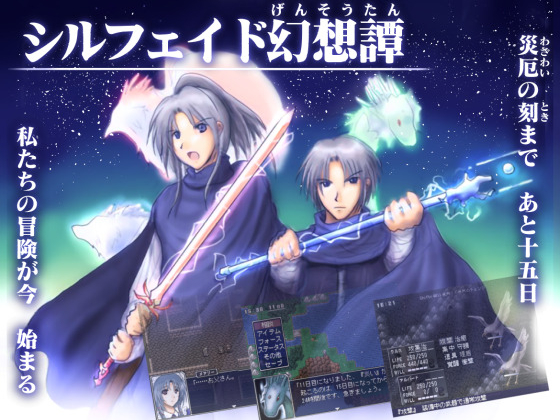

シルバーセカンド開発日誌
2022年02月
■
2022-02-26 (土) 片道勇者2 【59】 周回関連機能の実装▼【片道勇者2 周回関連機能の実装】
NPCや街などのデータ作りに疲れてきたので、
ここまで後回しにしてきた「周回関連機能の実装」に取りかかることにしました。
1周クリア時に何かアンロックしたり、倉庫に入れたりする処理ですね。
まだオプション的な要素は全然できていませんが、片道無印版で実装されていた
ゲームの基本的なメインループはほぼ完成することになります。
（シナリオ進めるための要素はまだ考え中！ 前作は「城の住人」でシナリオ進行してましたね）
ということで今回はその辺の周回関連機能について、変わった点をご紹介！
キャラメイク画面から行ける解放画面

前回はゲーム終了時にしかアンロックできませんでしたが、今回は「タイトル画面」からでも
アンロック画面や次元倉庫にアクセスすることも可能になります。
さらには次元倉庫に「直前の周のアイテム交換をやり直せる機能」まで搭載！
たとえばプレイを開始したとき、ガンガンに鍛え抜いたロングブレイドを
前回うっかり入れ忘れていたことに気付いてしまった場合は、
すぐリセットしてキャラメイク画面から「最終交換」をやり直せば
前回入れ忘れたアイテムを入れ直すことができます！ 安心度アップ！
こんな風に「注意力不足で財産を失いかけても後で取り戻すチャンスがある」という仕組みは、
過剰な注意力を費やしたり確認作業を重ねたりする量を減らせるので、
プレイアビリティの向上に繋がりそうです。
もちろん「特徴」や「クラス」、「エクストラ要素」の解放も以前通り！
『片道勇者プラス』の攻略wikiを見たら「特徴」の種類が思ったより少なかったので、
今回は面白そうなアイデアを詰め込んでいきたいですね。
200kmに1回修理ができるアビリティとか。
次元倉庫の「拡張」も前作よりすばやく直感的に！

あと次元倉庫の「サイズ」はアイテムの入れ替え中に増やせるようにしておきました。
枠が足りないことに気付いていちいち前の画面に戻って次元倉庫の枠を増やして
また交換画面に来るのは面倒臭い！
一度作り直したところもよく考え直して、こういった面倒くささがあるところは
思いつく限り減らしていきたいです。 ■
2022-02-12 (土) シルフェイド幻想譚がスマホ(ゲームアツマール)でプレイ可能に！▼【シルフェイド幻想譚がスマホでプレイ可能に！】
『シルフェイド幻想譚』がゲームアツマールさんにて、
なんと【スマートフォンで】遊べるようになりました！
（正確にはブラウザで遊べます）
シル幻をスマホで遊べるページへ[ゲームアツマール] (閉鎖済み)

※セーブデータの保存はニコニコにログインしてる方が安全です
※スマホの人は、ページを開いたら「パッド」を押して仮想パッドを開いてください。
で、開発面で何をやったかというと、ゲームアツマールだと「Shift」キーが使えないので
Shiftキーを使ってるところを全部置き換えて「決定」と「キャンセル」だけで
遊べるように全体を大改造していました。
たとえば戦闘中に「WILL」コマンドが出るようになっています。
久々にRPGツクール2000をいじるとすごい大変でした。
いじりながらテストプレイしたい……文字列ピクチャ作りたい……！
（ツクール2000は画像で文字を作らねばならない。アイテムも説明も全部画像です）

滅多に説明されないWILLの仕様が常に明示化されました
他にもメニューシステム全般とか宿システムとか
ダッシュ機能などいっぱいいじってました。
意外と「Shift」でなく「決定キー」でのダッシュもいけることが分かりましたが、
決定キーだとキー押してからダッシュ状態に切り替わるときの
タイミング制御が大変でした。
普通に作ると決定キーを押した瞬間の制御が別イベントに吸われるせいで
キーを押しても会話が始まらなくなるようになっちゃって
色々工夫しなきゃいけなかったんですよ。
久々に自分のツール以外で作ったので仕様を把握するのが面白いです。
（といいつつウディタでも仕様をしょっちゅう忘れているんですが）
で、すごかったのがゲームアツマールさん側！
RPGツクール2000上でしっかり動いていれば、
ファイルをZipでアップロードするだけで
ブラウザ上でも問題なく動かせるようになるのですからすごい！
謎の技術力！
MIDI音声も、何か別フォーマットに変換されているのか、
あるいは特殊な再生方法があるのか分かりませんが、
しっかり再生されていて感動します。
【テストプレイしていて】
今回は2周くらいテストプレイしていましたが
クロウで遊ぶときはタンスより素手の方が楽かなと思って
途中から素手になってました。筋力99生命99素手プレイは頑丈で強い！
（「結界」持ちの敵が出てくることを知ってるというのと、
タンスの重さで色々持てるからというのもありますが）
あと某トカゲ人の仲間を連れていこうとしたら肝心なところで回復してなかったので、
出会うたびにLIFEとFORCEを回復するように仕様変更しておきました。
そして2周目はスケイルの初周ハードモードで遊んだのですがこれがアツい！
「始めから」を選んで「キャンセル」を押しながら待ってると
初周からハードモードが選べるのですが、
スケイルを選んでいたのもあってあまりにも簡単に死ぬ！
死亡回数の制限はノーマルと変わらないのでガンガン死ねるのですが、
WILLが3回になってしまうのと敵がいい具合に強くて
一手一手が重くなっててアツいです。
ハードだと敏捷レベルも重要になるので「ハヤブサの腕輪」も使うようになったり、
あるいはフェザーも活躍チャンスが増えたりして、
考え所が増えてて面白いなーと感じられるました。
相当にRPG慣れしている人は最初からハードモードでもいいかもしれません。
【スマホでの操作感は？】
ちなみにスマートフォンでの仮想パッドでの操作感ですが、
十字キーでの操作ミスがたまに発生しがちな以外は、
キーやメニューの反応なども快適でいい感じに遊べました。
ちなみにダッシュはPC版の「切り替え」だとやりにくかったので、
スマホ版のデフォルトは「決定押しっぱなし」ダッシュになっています。
イマイチだった場合は設定から切り替えてください。
【スマホプレイでの裏技】
非公式な使い方だとは思いますが、スマートフォンの「Chrome」であれば
「設定」→「ユーザ補助機能」 の 「強制的にズームを有効にする」
をオンにすると強引にズームして画面を大きくできます！
パッド部分も少し大きくできるので、私の場合は操作ミスが減ってやりやすくなりました。
十字キーの操作ミスが発生しがちな場合は、よければぜひお試しください。
そんなわけでスマホでも遊べるようになった『シルフェイド幻想譚』（ゲームアツマール閉鎖）、よければぜひ触れてみてください！ 2022年02月
Copyright © SmokingWOLF / Silver Second
 カテゴリ: 片道勇者2
カテゴリ: 片道勇者2 カテゴリ: 片道勇者2
カテゴリ: 片道勇者2